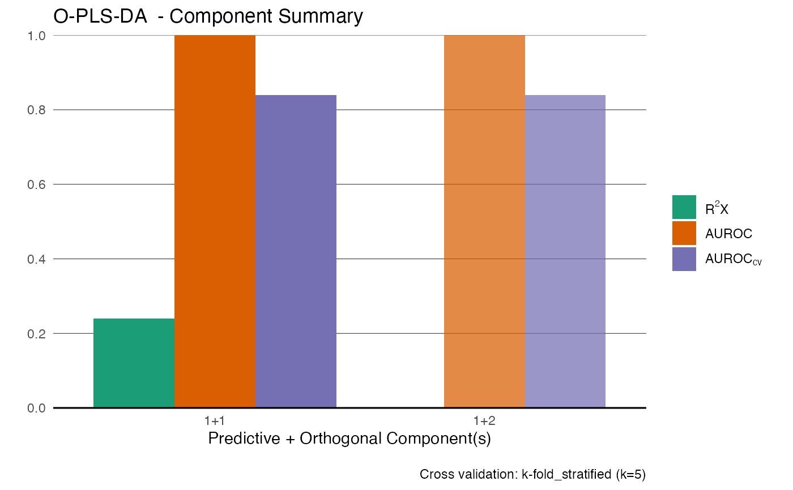
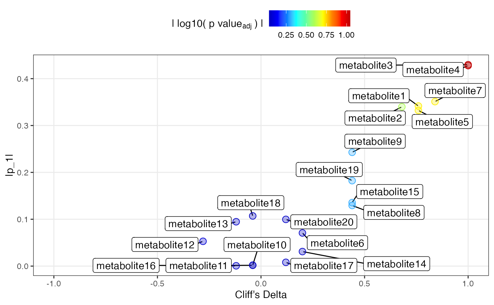

Generates an eruption plot to visualise variable importance in an OPLS-DA model. Variables are plotted by their model loading (from predictive or orthogonal component), effect size (Cliff's delta), and adjusted p-value from the Kruskal-Wallis rank sum test.
Arguments
- mod
An OPLS model object of class
OPLS_metabom8, generated viaopls.- pc
Integer or character. Component to plot: use
1for predictive, or'o1','o2', etc., for orthogonal components.- p_adj
Character string. Method for p-value adjustment. See
p.adjust.- invert_es
Logical. If
TRUE, swaps the reference group for Cliff's delta calculation.
Value
A list with:
dataA
data.framewith model loadings, Cliff's delta, and (adjusted) p-values.plotA
ggplotobject for visualisation.
Details
Designed for binary classification OPLS-DA models. Effect size is calculated with Cliff's delta, and variable-level p-values are obtained via Kruskal-Wallis tests. Color indicates the negative log10 of (adjusted) p-values. This plot is designed for a low nb of features, ie. not full res NMR data
References
Torben Kimhofer Eriksson, L. et al. (2008). CV-ANOVA for significance testing of PLS and OPLS models. J. Chemometrics, 22, 594–600.
Examples
set.seed(123)
X <- matrix(rnorm(200), 10, 20)
grp <- rep(c("A", "B"), each = 5)
X[grp == "B", 1:5] <- X[grp == "B", 1:5] + 2
X[grp == "B", 5] <- X[grp == "B", 4] * 0.9 + rnorm(5, 0, 0.1)
colnames(X) <- paste0("metabolite", 1:20)
mod = opls(X,grp)
#> Performing discriminant analysis.
#> Reducing k to 5 due to small group size (min n = 5).
#> An O-PLS-DA model with 1 predictive and 1 orthogonal components was fitted.

er = eruption(mod)
#> Using B as reference group for Cliff's delta.
head(er[[1]]); plot(er[[2]])
#> p1 id Cd pval pval_adjusted
#> metabolite1 0.34153518 metabolite1 0.76 0.047201768 0.18880707
#> metabolite2 0.33983030 metabolite2 0.68 0.075800175 0.25266725
#> metabolite3 0.42981266 metabolite3 1.00 0.009023439 0.09023439
#> metabolite4 0.42777609 metabolite4 1.00 0.009023439 0.09023439
#> metabolite5 0.33225029 metabolite5 0.76 0.047201768 0.18880707
#> metabolite6 0.07078389 metabolite6 0.20 0.601508134 0.88708533
